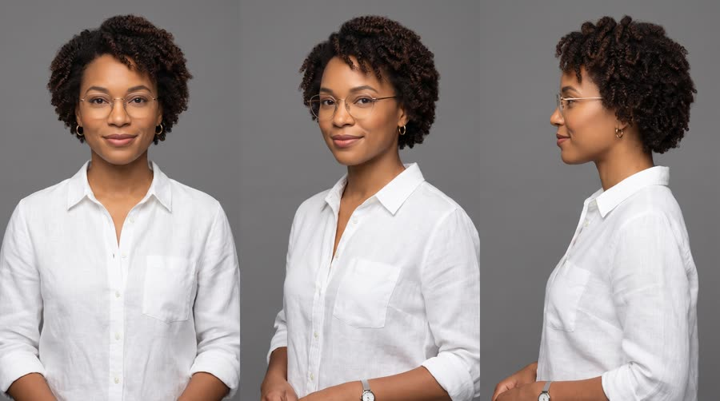
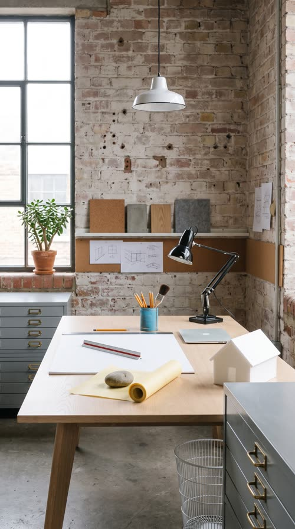
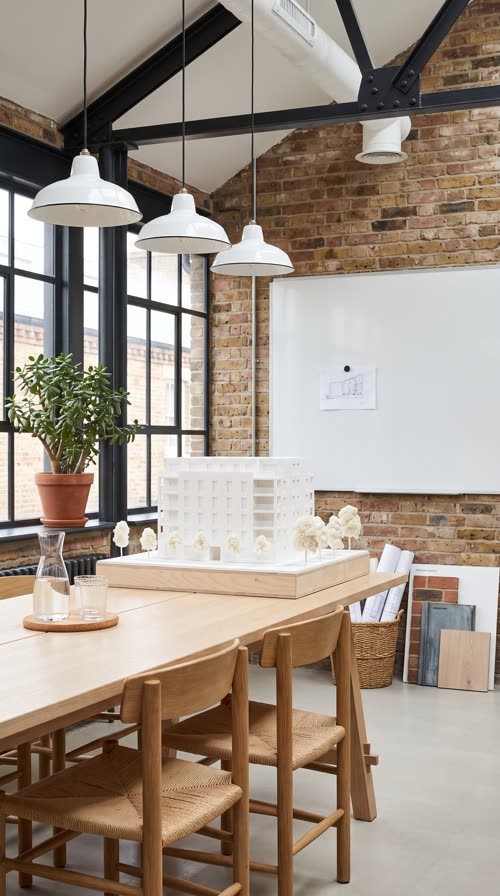
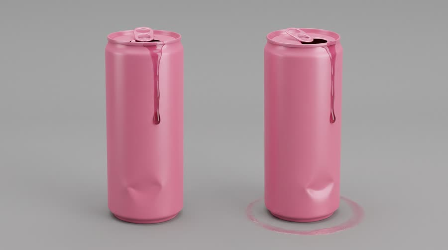
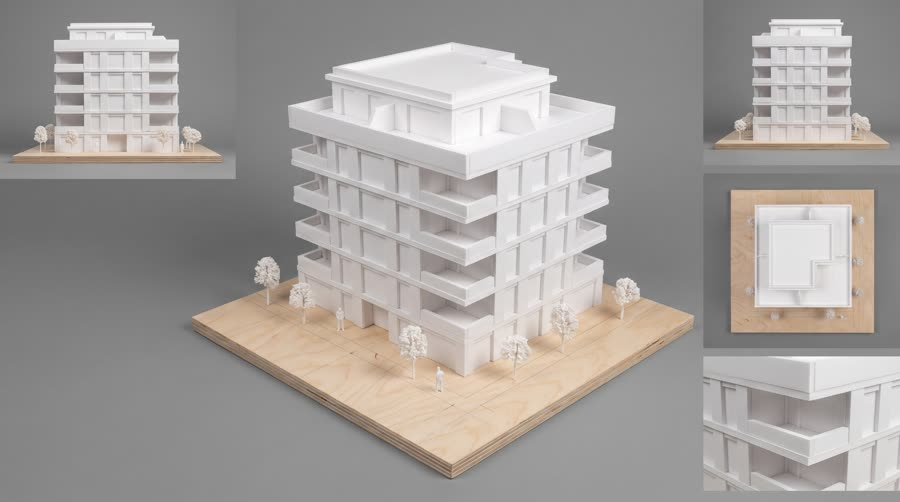
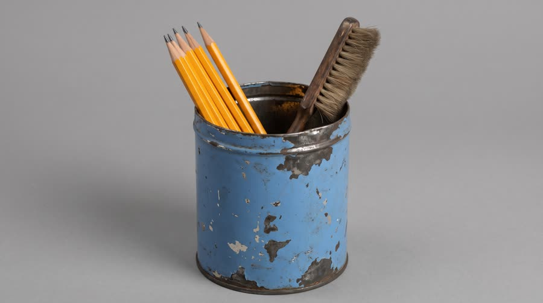

Two Cans
Same architect, same Monday, stacked in split screen: on top she runs on a sticky sugary can, below she runs on Red Bull Sugarfree. By 3pm only one of them is still sharp, and the other one knows it.
One of the five formats run across $100M of DTC Meta spend. A comparison is a complete argument in one frame: the viewer sees the cost of the old way and the win of the new way at once, so the benefit never has to be claimed out loud. It works when the two sides differ in one controlled variable (the product) and the difference is visible, not narrated.
Contact sheet
One keyframe per shot, with the caption as it will appear.


Cast and world

Voice: warm, quick, wry, American, a little deadpan on the jokes


World. The fictional Brooks Studio, a small architecture practice in a converted warehouse in Chicago, one Monday from 9am to 6pm. The same woman lives the day twice: the sugar way (top pane) and the sugarfree way (bottom pane). Palette. Bottom pane built from the can: cool daylight, sky blue, brushed silver, white foam models. Top pane: warm tungsten, dull beige and candy pink, crumbs and clutter.
Fictional brands. Brooks Studio (her practice, never shown as text); the rival: a plain candy-pink can with no label, no text and no logo, standing for any generic sugary drink
World bible
Fixed with the concept: the lore, the objects and the textures that make this world specific. Only product-adjacent props change per product.
- Brooks Studio is Nia's four-person architecture practice, three years old, on the second floor of a 1920s printing warehouse in Chicago. The floor still has bolt holes where the presses stood.
- Today, Monday, at 3pm, she pitches a six-storey apartment building to the Ferrante family. The white foam model on the meeting table took the team eleven nights.
- The little foam house on her desk is the first model she ever built, in her second year of college; its roof has been glued back on twice.
- Her pencil cup is her grandfather's old blue coffee tin; it always holds six sharpened pencils and a soft drafting brush.
- Both halves are the same room, the same objects, the same woman on the same Monday. Only the drink changes, and with it the light, the crumbs and the stains.
Wear and time. One Monday, 9am to 3pm, lived twice in the same room with the same objects in the same places. The sugar way: warm tungsten, wrappers, crumbs, a pink sticky ring on the drafting pad, the pencil tin knocked over, a stained cuff. The sugarfree way: cool window daylight, everything where it belongs, pencils upright in the tin, a clean cuff. The golden-hour pack shot at the end belongs to the sugarfree day.
Signature objects



Set dressing by location
Foreground
a triangular aluminium architect's scale ruler lying across the drafting pad; her grandfather's faded blue coffee tin pencil cup with six sharpened pencils and a soft drafting brush; a half-unrolled roll of yellow trace paper held flat by a smooth river stone; the small white foam house model with a pitched roof and a visible glue seam on the ridge
Midground
a black anglepoise desk lamp with a slightly chipped arm; a closed silver laptop with a completely plain, bare, unmarked lid; a jade plant in a terracotta pot on the deep window sill; a grey steel flat-file cabinet with brass pull handles beside the desk; a white wire waste bin by the desk leg
Background
exposed brick with patches of ghost white paint and old bolt holes; a cork strip pinned with loose pencil sketches of rooflines and floor plans, no words; a tall steel-framed window with a cracked-then-repaired corner pane; a shelf of material samples: a cork square, a pale concrete tile, a slice of oak and a green felt swatch; a white enamel pendant lamp hanging on a long black cord
Foreground
the near end of the long pale oak table with two woven-seat oak chairs; a glass water carafe and two tumblers on a cork coaster
Midground
the large white foam model of a six-storey apartment building on a birch plywood base, tiny foam trees around it; a wicker basket of rolled drawings at the table's side; material sample boards leaning against a table leg: brick, zinc and oak swatches
Background
a blank whiteboard on the brick wall with a single magnet holding up a small pencil sketch; tall steel-framed windows with the jade plant on the sill; black steel roof beams and a white ventilation duct overhead; a row of three white enamel pendant lamps
- Nia: thin gold-rim glasses with one arm a little loose, which she pushes up with a knuckle; a slim silver watch with a worn leather-look steel mesh strap; a white linen shirt with the sleeves rolled twice, a graphite smudge on the side of her right hand; a short stubby pencil tucked behind her ear; small gold hoop earrings
- Brooks Studio: a small square folded along one diagonal, like a paper corner, white and pale oak. On: the plywood base of the Ferrante model (a tiny etched corner mark), the end card. Text in post: none
- the rival: none: a plain candy-pink can, candy pink. On: the sugar-way pane only. Text in post: none
the pencil scratching fast on the drafting pad; a sticky fizz and splatter as the pink can opens, against a clean crisp crack; fingertips peeling off sticky laptop keys; pencils rolling out of the knocked-over tin; the soft creak of a woven-seat chair; a can dropping into a wire bin with a hollow clank; street traffic hum through the tall window
Beats
| Time | Beat | What happens |
|---|---|---|
| 0-2.5 | hook | Split screen, both panes in sync: the same woman cracks a can at 9am. Top: sticky pink spray. Bottom: a clean crack, she looks at us. |
| 2.5-11.5 | contrast | Ping-pong: 11am top, fingers stuck to the keyboard; 11am bottom, fast clean sketching; 3pm top, a giant yawn at the meeting table. |
| 11.5-16 | win | 3pm bottom: she presents the model, sharp and fast. |
| 16-21 | product | The split collapses, the sugarfree side takes the frame: the can at chest height, the brand line. |
| 21-24 | payoff | The sugar-way Nia looks straight at her other self, concedes, and bins the pink can. |
| 24-30 | cta | The can standing on the finished model at golden hour, tagline. |
Screenplay
35 spoken words in 30 s. Each line keeps its intent (fixed in the template) and its wording (written for this product).
| Time | Speaker | Line | Intent (template) |
|---|---|---|---|
| 0.4-2.3 | Nia | Same Monday. Two cans. bottom-pane Nia, straight to lens, dry, a tiny smile | Hook: state the controlled experiment, same person, one difference. |
| 3.0-5.0 | Nia | Why is everything sticky? top-pane Nia, muttering, peeling her fingers off the keys | Old way, cost one: a small everyday annoyance the rival causes, no health claim. |
| 6.0-8.2 | Nia | Mine helps me focus. bottom-pane Nia, a quick glance up at the lens mid-sketch, then straight back to work | Product way, win one: the matching moment with the product's benefit, allowed claim only. |
| 9.3-11.2 | Nia | Is it three already? top-pane Nia, through a yawn, chin on her hand | Old way, cost two: the afternoon drags. |
| 12.2-15.6 | Nia | And that's the whole building. Questions? bottom-pane Nia, standing, crisp and confident, to colleagues off camera | Product way, win two: the same hour, visibly winning at the thing that matters. |
| 16.6-20.4 | Nia | Red Bull Sugarfree. Same benefits, without the sugar. to lens, warm, unhurried, can at chest height · Say: RED BULL SHUG-er-free, three clear words | Product line: name the product and the one difference that made the whole day, allowed claim only. |
| 22.0-23.4 | Nia | Okay. Fine. top-world Nia, flat, looking straight at the lens, dropping the pink can in the bin | Payoff: the old-way self concedes. |
| 27.0-29.4 | Nia (off camera) | Wiiings without sugar. warm voiceover, smiling · Say: WINGS, stretch the vowel slightly | Tagline in the brand's own words. |
Generation plan
U1 · 0 to 24 s · 12 s generation
Shots S01, S03, S05, S08 · References: nia card, desk plate, meeting plate, S01 keyframe as first frame
9:16 commercial comparison footage, warm yellowish tungsten light, cluttered and a bit sticky, locked-off 35mm eye-level shots, faces and hands kept around the vertical centre of the frame. @Image1 (Nia, white linen shirt, gold-rim glasses) in the studio from @Image2 and @Image3. Only a plain candy-pink can with no label, no text and no logo appears. Shot 1 (0 to 2.5 s): at her cluttered desk she cracks the pink can and a small spurt of sticky pink foam hits her shirt cuff; she flinches. Shot 2 (2.5 to 5.5 s): medium close-up, she peels her sticky fingertips off a laptop keyboard and mutters: "Why is everything sticky?" Shot 3 (5.5 to 8.5 s): at the meeting table, chin on her hand, a long ordinary afternoon yawn: "Is it three already?" Shot 4 (8.5 to 12 s): back at the desk she stares flatly into the lens, says: "Okay. Fine." and drops the pink can into a wire bin. Native sound: fizz, tacky peeling, yawn, the can clanking in the bin. No music. No text, no clocks, no split screen.
U2 · 0 to 16 s · 10 s generation
Shots S02, S04, S06 · References: product can official, nia card, desk plate, meeting plate, S02 keyframe as first frame
9:16 commercial comparison footage, cool clean daylight, tidy and ordered, locked-off 35mm eye-level shots matched to the other world, faces and hands kept around the vertical centre of the frame. @Image2 (Nia, white linen shirt, gold-rim glasses) in the studio from @Image3 and @Image4, with the exact can from @Image1. Shot 1 (0 to 2.5 s): at her tidy desk she cracks the can cleanly, holds it at chest height, label to camera, and says dryly to the lens: "Same Monday. Two cans." Shot 2 (2.5 to 5.5 s): medium close-up, sketching fast and sure on a drafting pad, the can upright on the desk corner, she glances up: "Mine helps me focus." Shot 3 (5.5 to 10 s): standing at the head of the meeting table presenting a white foam building model to two colleagues seen from behind, crisp: "And that's the whole building. Questions?" Keep the can's shape, colours, wordmark and bulls exactly as @Image1. Native sound: can crack, pencil, confident voice. No music. No text, no clocks, no split screen.
U3 · 16 to 21 s · 5 s generation · exact-risk (short, cheap to re-roll)
Shots S07 · References: product can official, nia card, S07 keyframe as first frame
9:16 commercial, cool clean daylight by a tall studio window. Medium close-up of @Image2 (Nia) holding the exact can from @Image1 at chest height, label to camera and readable, very slight push-in, she says warmly to the lens: "Red Bull Sugarfree (said RED BULL SHUG-er-free, three clear words). Same benefits, without the sugar." The can stays still in her hand for the whole line. Keep the can's shape, colours, wordmark and bulls exactly as @Image1. Native sound: room tone, her voice. No music, no text.
U4 · 24 to 30 s · 6 s generation · exact-risk (short, cheap to re-roll)
Shots S09 · References: product can official, S09 keyframe as first frame
9:16 premium pack shot at golden hour. Slow push-in onto the exact can from @Image1 standing upright on a tidy pale oak desk beside a finished white foam architectural model, label to camera, condensation drops, warm low sun from a window rim-lighting it. The can does not move or change. Keep the brick wall above the can empty. Native sound: quiet evening studio room tone. No music, no text.
Sound, music, voice, captions
| 0 to 16 s | split | One motif in two versions, 100 bpm: a detuned, wobbly, slightly flat Rhodes and lazy kick for the sugar pane; the same motif bright and tight on plucked synth and clean claps for the sugarfree pane; the edit switches versions on each ping-pong cut. |
| 16 to 24 s | take the frame | Bright version only, filtered down under the product line, a comic one-beat dropout for Okay. Fine. |
| 24 to 30 s | resolve | Bright version opens up with a warm pad and resolves on the tonic under the tagline. |
Added sound
- 0 s: soft whoosh as the divider draws across the frame (announces the split screen format in the first frame)
- 16 s: whoosh up as the top pane slides away (marks the winning side taking the screen)
- 2.5 s: small clock tick on each time-stamp change (also at 5.5, 8.5, 11.5) (keeps the day moving across ping-pong cuts)
- Nia: native in U2 (sugarfree world, first generation); her U2 stem is the voice reference for U1, U3 and the tagline so both versions share one voice
font: Manrope ExtraBold, size: 4.6% of frame height, color: #FFFFFF, active word: #FFFFFF full opacity, other words 65%, box: rounded pill behind each caption, rgba(20,20,20,.55), 12px radius, position: inside the speaking pane, 80% down that pane; in full frame, 70% down the frame, max words on screen: 4, pane labels: top pane 'THE SUGAR WAY' in muted beige small caps, bottom pane 'THE SUGARFREE WAY' in sky blue #6EC1E4 small caps, both top-left inside their pane, 2.6% of frame height, time stamps: top-right of each pane, monospace, white 80%, ticks over on each beat
Post text- 0 to 16 s: Split screen: two 9:8 panes, 3px white divider at 50% height / (divider draws left to right over 6 frames at 0 s; inactive pane holds its last frame at 60% brightness, muted)
- 0 to 16 s: THE SUGAR WAY (top) / THE SUGARFREE WAY (bottom) / (pane labels, Manrope ExtraBold small caps 2.6% of frame height, top-left of each pane; beige #CDBBA0 on top, sky blue #6EC1E4 on bottom)
- 0 to 16 s: 9:02 AM (0 to 2.5 s), 11:40 AM (2.5 to 8.5 s), 3:15 PM (8.5 to 16 s) / (time stamps top-right of each pane, JetBrains Mono white 80%, digits roll over in 5 frames with the tick)
- 25.4 to 30 s: Red Bull Sugarfree / Wiiings without sugar (Manrope ExtraBold white, centred in the empty wall above the can, fade and rise 12px over 8 frames)
Adaptation contract
How this same concept takes any physical product.
| Product type | Where it sits in the story | Scale |
|---|---|---|
| ingested | both versions open their drink at 9am; only one is the product | hand |
| applied | both versions apply their morning product at the studio mirror (sunscreen, balm, hair product); one is the old greasy kind | hand |
| worn | both versions put on their shoes or glasses at 9am; one pair is the product, the other pinches by 3pm | body |
| handheld | both versions pick up their tool or gadget (earbuds, bottle, pen); the old one dies or leaks mid-day | hand |
| carried | both versions arrive with a bag; the old one spills its contents at the meeting table | hand to lap |
| home | the same beats happen in two versions of her home office: old chair and lamp against the product | room |
| consumable | both versions refill from their pack at 9am; the old pack is empty or messy by 3pm | hand |
Style bible
Look. Stacked split screen for 9:16: two 9:8 panes, the old way on top, the product on the bottom, separated by a thin white divider. Identical framing, lens, eyeline and blocking in both panes so only the variable changes. The old-way pane is warmer, messier, slightly desaturated and cluttered; the product pane is clean, cool and ordered in the product's colours. Ping-pong rhythm: the pane that is talking plays, the other holds a frozen frame at 60% brightness, so the eye always knows where to look. The split collapses into a single full frame for the product line and the CTA: the winning side takes the screen.
Camera. Matched locked-off setups (same height, same 35mm lens, same distance) between the two worlds so the panes rhyme; at most a slow matched push-in in both panes. Action is staged in the middle band of the frame (22% to 78% of the height) because each 9:16 generation is cropped to a 9:8 pane. Product moments get a locked macro insert in full frame.
Light and texture. Same room, two moods: old-way pane lit warm tungsten with a sickly yellow cast and flat shadows; product pane lit with cool clean daylight and a crisp key. The product is the brightest object in any frame it is in. Clean commercial digital. Old-way pane gets a touch of softness and lifted blacks in the grade; product pane stays crisp with true blacks.
Pacing. Hook in under 2 seconds with both panes moving in sync on the same action (the reveal that it is one person, two versions). Then ping-pong beats of 3 to 4.5 seconds, alternating sides, each old-way beat answered by the matching product beat. Time stamps rendered in post keep the day moving. Collapse to full frame for the product line (hold the can at least 1.5 s), one comic beat from the old-way self conceding, then the CTA.
Sound. Native sound per pane from its own generation; only the active pane's sound is heard, the frozen pane is muted. A single score that shifts between a dull, detuned version of the motif (old way) and a bright version (product way) on each ping-pong cut. Added sound only for the split open and collapse (a soft whoosh) and each time-stamp tick.
Known failures.
- the model cannot render a real split screen reliably: generate each world as its own 9:16 unit and composite the panes in post
- action at the top or bottom of the frame is lost in the 9:8 crop: keep the face and hands around the vertical centre with normal headroom above and desk or floor below
- asking for action 'in the middle band of the frame' is read literally and draws flat colour bars and hard panel edges into the still: describe it as normal headroom above and desk or floor below in one seamless photograph with no borders or bars
- generating keyframes before the character sheet exists gives a different woman in every pane: never render a shot with a missing or failed cast card; re-run the card, then force every shot that uses it
- the two worlds drift into different rooms or outfits: use the same location plate and the same character sheet for both, describe the outfit identically, change only light, clutter and the one variable
- the rival reads as a real competitor: the rival is a plain candy-pink can with no label, no text, no logo, never red, blue or silver, never a known can shape colour scheme
- the old-way side slides into health claims (shaking, clutching the stomach, looking ill): limit it to mess, stickiness and ordinary afternoon yawns
- both panes talking at once is unreadable: only one pane speaks at a time, the other is frozen and muted
- the product gets swapped for the rival or vice versa: name which can is in which world in every prompt
- the model adds labels, clocks or captions into the scene: pane labels and time stamps are post only, keep walls and screens blank
- pane pairs drift in framing (one wide, one medium) and the comparison stops rhyming: give both panes the same explicit distance ('waist-up, camera about one metre away')
- empty pack shots can sprout a person peering from behind the product: say no people, hands or faces anywhere
- naming the location plate in a close shot pulls the camera back to the plate's wide framing: say 'a desk like the one in the reference, seen close, desk legs not visible'
- a dressed desk plate puts a fruit logo on the closed laptop lid: say a closed silver laptop with a completely plain, bare, unmarked lid
- a location plate shot at a three-quarter angle pulls the paired desk shot back to that side-on wide view: spell out head-on, centred, one metre in front of the desk, desk edge straight across the lower quarter, and say the desk from the reference is seen close
Claims and cost
Claims used (all from the product page): Same benefits of the original Energy Drink, without sugar; Caffeine helps to improve concentration and increase alertness
Video estimate: 33 s of generation at $0.27/s = $8.91 first pass, $20 to 30 with retakes, plus about $1.5 music.